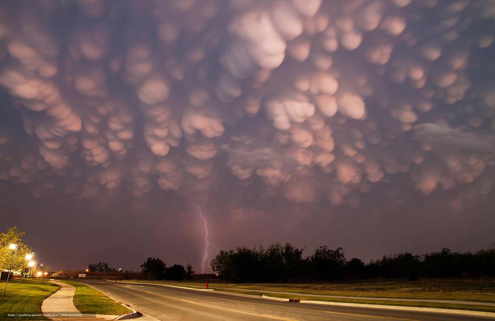
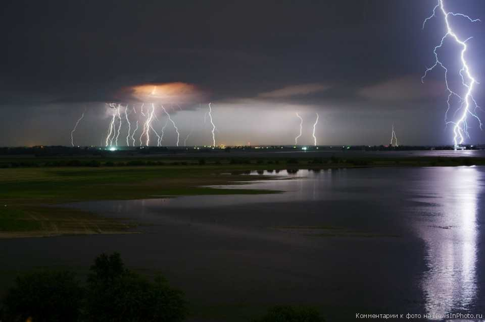
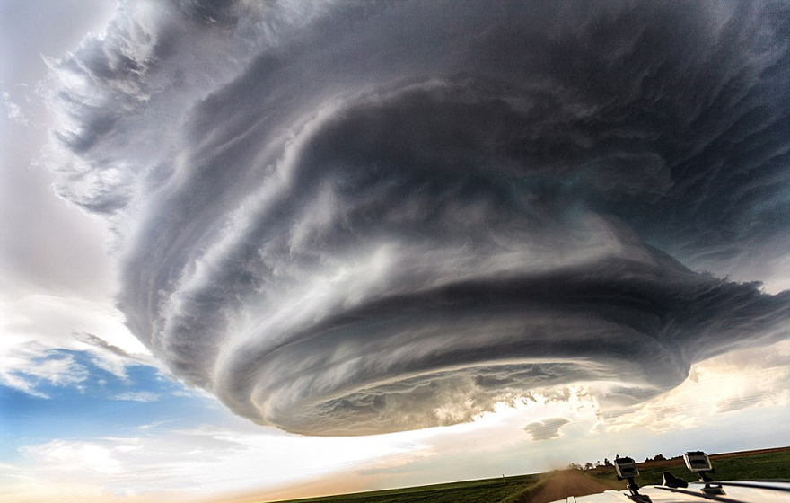

Грозы, суть явления
Гроза́ — атмосферное явление, при котором внутри облаков
или между облаками и земной поверхностью возникают электрические
разряды — молнии, сопровождаемые громом. Как правило, гроза
образуется в мощных кучево-дождевых облаках и связана
с ливневым дождём, градом и шквальным усилением ветра.
Гроза — одно из самых опасных для человека явлений, связанных с погодой:
по количеству зарегистрированных смертных случаев только внезапные
наводнения приводят к бо́льшим людским потерям
Одноячейковые грозы
Одноячейковые кучево-дождевые (Cumulonimbus, Cb) облака развиваются в дни со слабым ветром в малоградиентном барическом поле. Их называют ещё внутримассовыми или локальными. Они состоят из конвективной ячейки с восходящим потоком в центральной своей части, могут достигать грозовой и градовой интенсивности и быстро разрушаться с выпадением осадков. Размеры такого облака: поперечный — 5—20 км, вертикальный — 8—12 км, продолжительность жизни — около 30 минут, иногда — до 1 часа. Серьёзных изменений погоды после грозы не происходит.Формирование облачности начинается с возникновения кучевого облака хорошей погоды (Cumulus humilis). При благоприятных условиях возникшие кучевые облака быстро растут как в вертикальном, так и в горизонтальном направлении, при этом восходящие потоки находятся почти по всему объёму облака и увеличиваются от 5 м/с до 15-20 м/с. Нисходящие потоки очень слабы. Окружающий воздух активно проникает внутрь облака за счёт смешения на границе и вершине облака. Облако переходит в стадию средних кучевых (Cumulus mediocris). Образующиеся в результате конденсации мельчайшие водяные капли в таком облаке сливаются в более крупные, которые уносятся мощными восходящими потоками вверх. Облако ещё однородное, состоит из капель воды, удерживаемых восходящим потоком, — осадки не выпадают. В верхней части облака при попадании частиц воды в зону отрицательных температур капли постепенно начинают превращаться в кристаллы льда. Облако переходит в стадию мощного кучевого облака (Cumulus congestus). Смешанный состав облака приводит к укрупнению облачных элементов и созданию условий для выпадения осадков и образования грозовых разрядов. Такое облако называют кучево-дождевым (Cumulonimbus) или (в частном случае) кучево-дождевым лысым (Cumulonimbus calvus). Вертикальные потоки в нём достигают 25 м/с, а уровень вершины достигает высоты 7—8 км.
Испаряющиеся частицы осадков охлаждают окружающий воздух, что приводит к дальнейшему усилению нисходящих потоков. На стадии зрелости в облаке одновременно присутствуют и восходящие, и нисходящие воздушные потоки. На стадии распада в облаке преобладают нисходящие потоки, которые постепенно охватывают все облако.

Многоячейковые кластерные Грозы
Это наиболее распространённый тип гроз, связанный с мезомасштабными (имеющими масштаб от 10 до 1000 км) возмущениями. Многоячейковый кластер состоит из группы грозовых ячеек, двигающихся как единое целое, хотя каждая ячейка в кластере находится на разных стадиях развития грозового облака. Грозовые ячейки, находящиеся в стадии зрелости, обычно располагаются в центральной части кластера, а распадающиеся ячейки — с подветренной стороны кластера. Они имеют поперечные размеры 20—40 км, их вершины нередко поднимаются до тропопаузы и проникают в стратосферу. Многоячейковые кластерные грозы могут давать град, ливневые дожди и относительно слабые шквальные порывы ветра. Каждая отдельная ячейка в многоячейковом кластере находится в зрелом состоянии около 20 минут; сам многоячейковый кластер может существовать в течение нескольких часов. Данный тип грозы обычно более интенсивен, чем одноячейковая гроза, но много слабее суперъячейковой грозы.
Многоячейковые линейные Грозы
Многоячейковые линейные грозы представляют собой линию гроз с продолжительным, хорошо развитым фронтом порывов ветра на передней линии фронта. Линия шквалов может быть сплошной или содержать бреши. Приближающаяся многоячейковая линия выглядит как тёмная стена облаков, обычно покрывающая горизонт с западной стороны (в северном полушарии). Большое число близко расположенных восходящих/нисходящих потоков воздуха позволяет квалифицировать данный комплекс гроз как многоячеечный, хотя его грозовая структура резко отличается от многоячейковой кластерной грозы. Линии шквалов могут давать крупный град (диаметром более 2 см) и интенсивные ливни, но больше они известны как системы, создающие сильные нисходящие потоки и сдвиги ветра, опасные для авиации. Линия шквалов близка по свойствам к холодному фронту, но является локальным результатом грозовой деятельности. Часто линия шквалов возникает впереди холодного фронта. На радарных снимках эта система напоминает изогнутый лук (bow echo). Данное явление характерно для Северной Америки, на территории Европы и Европейской территории России наблюдается реже.
Суперячейковые Грозы
Суперъячейка — наиболее высокоорганизованное грозовое облако. Суперъячейковые облака относительно редки, но представляют наибольшую угрозу для здоровья и жизни человека и его имущества. Суперъячейковое облако схоже с одноячейковым тем, что оба имеют одну зону восходящего потока. Различие состоит в размере суперъячейки: диаметр порядка 50 км, высота — 10—15 км (нередко верхняя граница проникает в стратосферу) с единой полукруглой наковальней. Скорость восходящего потока в суперъячейковом облаке значительно выше, чем в других типах грозовых облаков: до 40—60 м/с. Основной особенностью, отличающей суперъячейковое облако от облаков других типов, является наличие вращения. Вращающийся восходящий поток в суперъячейковом облаке (в радарной терминологии называемый мезоциклоном), создаёт экстремальные по силе погодные явления, такие, как крупный град (диаметром 2—5 см, иногда и более), шквалы со скоростью до 40 м/с и сильные разрушительные смерчи. Окружающие условия являются основным фактором в образовании суперъячейкового облака. Необходима очень сильная конвективная неустойчивость воздуха. Температура воздуха у земли (до грозы) должна быть +27…+30°C и выше, но главным необходимым условием является ветер переменного направления, вызывающий вращение. Такие условия достигаются при сдвиге ветра в средней тропосфере. Осадки, образующиеся в восходящем потоке, переносятся по верхнему уровню облака сильным потоком в зону нисходящего потока. Таким образом, зоны восходящего и нисходящего потоков оказываются разделёнными в пространстве, что обеспечивает жизнь облака в течение длительного периода времени. Обычно на передней кромке суперъячейкового облака наблюдается слабый дождь. Ливневые осадки выпадают вблизи зоны восходящего потока, а наиболее сильные осадки и крупный град выпадают к северо-востоку от зоны основного восходящего потока (в Северном полушарии). Наиболее опасные условия наблюдаются неподалёку от зоны основного восходящего потока (обычно смещённые к задней части грозы).По данной теме это все, у нас еще много интересной информации, просто переходите по ссылкам.